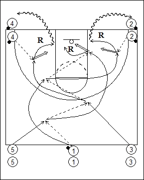
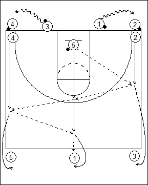

Catégorie : ECHAUFFEMENT (Ech-014)
Déroulement
- Cinq files de joueurs. Deux files avec ballons aux extrémités d’une baseline. Trois files au niveau de la ligne médiane. Le premier joueur de la file du centre possède un ballon.
- Les premiers joueurs des files 1, 3 et 5 partent en criss cross en réalisant quatre passes. Le premier joueur de la file 5 termine par un lay-up. Le premier joueur de la file 1 reçoit le ballon du premier joueur de la file 2 pour un jump shoot. Idem pour le premier joueur de la file 3 qui reçoit du premier joueur de la file 4. Chaque shooteur réalise son rebond.

- 3 va avec son ballon dans la file 4; 1 va avec son ballon dans la file 2.
- 5 repart vers la ligne médiane avec les premiers joueurs des files 2 et 4. 5 passe à 2 qui lui remet le ballon; 5 passe alors à 4 qui lui rend également le ballon.
- 5 prolonge vers 1 et va derrière celui-ci; 2 va derrière 3 et 4 derrière 5. Les trois joueurs suivants partent à leur tour pour l’exécution du drill.
Coaching points
- La première passe se fait toujours vers la gauche, tant en allant qu’en revenant.